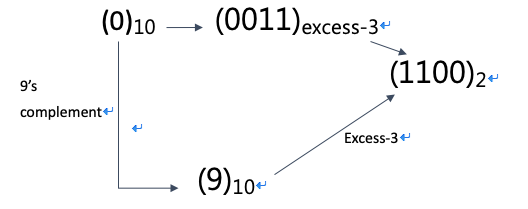
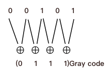
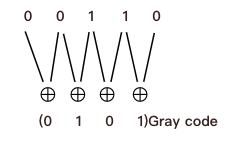
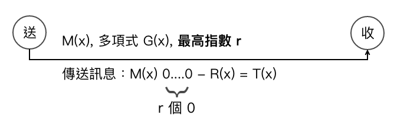
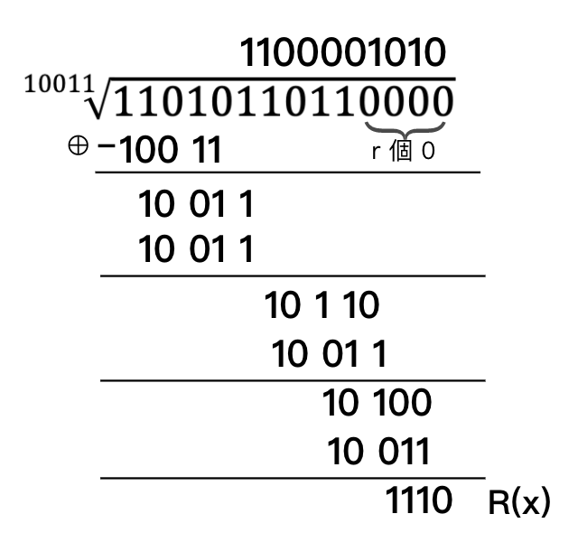
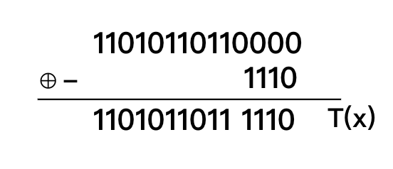
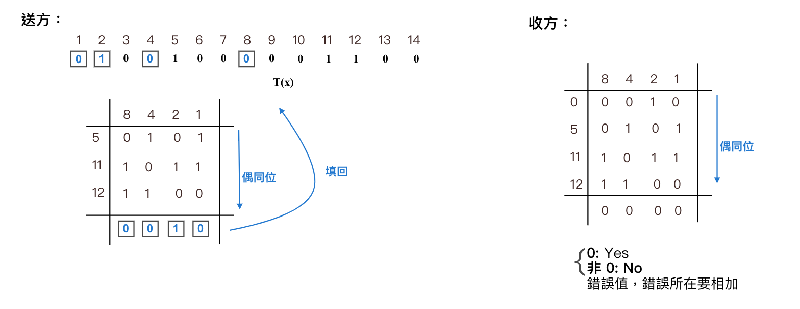
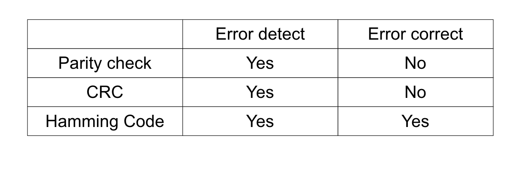

1.5 數碼、文字碼
BCD 碼
利用 4 個 bits (2進制) 表示 10 進制中每一位數之值
有6種組合不用： 1010(10), 1011(11), 1100(12), 1101(13), 1110(14), 1111(15)
8, 4, -2, -1 碼 (BCD 碼之變形)
Excess-3 code = BCD code + 3
有6種組合不用： 0000(0), 0001(1), 0010(2), 1101(13), 1110(14), 1111(15)
具有Self-Complement(自我補數) 功能
當 10 進制位數值轉成 excess-3 code後, 再取 1's complement 會同於 10 進制取 9's 補數
Ex:

8, 4, -2, -1 (+3)=> excess-3 code
| 10 進位 | BCD | 8, 4, -1, -2 | excess-3 code |
|---|---|---|---|
| 0 | 0000 | 0000 | 0011 |
| 1 | 0001 | 0111 | 0100 |
| 2 | 0010 | 0110 | 0101 |
| 3 | 0011 | 0101 | 0110 |
| 4 | 0100 | 0100 | 0111 |
| 5 | 0101 | 1011 | 1000 |
| 6 | 0110 | 1010 | 1001 |
| 7 | 0111 | 1001 | 1010 |
| 8 | 1000 | 1000 | 1011 |
| 9 | 1001 | 1111 | 1100 |
Ex:
(42)10
= (0100 0010)BCD
= (0100 0110)8, 4, -2, -1
= (0111 0101)excess-3
Ex:
48 bits 採 BCD 編號後可表示多少組合？
(A) 2^48 (B) 2^12 (C) 10^48 (D) 10^12
D
48/4 = 12 (若 BCD 拿掉, 則選 A)
Gray code (格雷碼)
Def: 任何 2 個連續數字利用 2 進位表示只有一個 bit 不同謂之
特色:
1. Gray Code 不唯一, 欲得唯一的 Gray Code, 用 reflected (反射) Gray Code
2. 適用於 data 傳輸
3. 每次僅更動 1 bit
Ex:
| 10 進位 | Gray Code | Reflected Gray Code |
|---|---|---|
| 0 | 00 | 11 |
| 1 | 01 | 10 |
| 2 | 11 | 00 |
| 3 | 10 | 01 |
Part1: 10 進制 -> Gray Code
作法：
(1) 將 10 進制 -> 2 進制
(2) 若 2 進制為 (Xn, Xn-1, .....X0)2, 則 Gray Code 如：

Ex:
A ⊕ B -> 若 A, B (1) 相同為 0, (2) 相異為 1
Ex:
(5)10, (6)10, (7)10, 以 4 bits, 化成 Gray Code
Sol:
1. (5)10 = (0101)2

2. (6)10 = (0110)2

3. (7)10 = (0111)2

Part2: Gray Code -> 10 進制
作法：
若一 Gray Code:(Gn, Gn-1, ...G0)Gray, 則
(1) Gn 直接留下(即最左位元)
(2) 將 Gn 和 Gn-1 做 ⊕ 得到 R2, 而 R2 跟 Gn-2 做 ⊕

Ex: (0101)Gray Code = (6)10

ASCII (American Standard Code for Information Interchange)
特色:
(1) 理論上由 7 個 bits (2^7 = 128 組合) 所組成，而實際應用是由 8 bits (1 byte) 組成
(2) 常用字元：
'A' -> (65)10 -> (41)16
'a' -> (97)10 -> (61)16
'0' -> (48)10 -> (30)16
(3) 編號順序 '0' < 'A' < 'a' => 特殊符號(，, Esc) < 數字 < 大寫 < 小寫
ASCII 100 = (97) => a, (98) => b, (99) => c, (100) => d
EBCDIC (Extended BCDIC)
特色：
(1) 由 IBM 所發明，中大型主機採用 (現在也均用 ASCII)
(2) 用 8 bits 表示一字元
(3) 編碼順序(和 ASCII 相反) -> 小寫 < 大寫 < 數字
Unicode (萬用/完全/統一碼)
特色：
(1) 用 16 bits 表示字元符號
(2) 前 128 個字元符號和 ASCII 相同
(3) 主要解決 跨國語系 問題
(4) 目前常使用的格式為 UTF-8, UTF-8 表示中, 日, 韓文需 3 個 Byte (Taiwan => 6 bytes)
Note: 繁體中文 => Big5, 簡體中文 => GBK
錯誤碼的偵測與更正
- Parity Check => 只能 Detect Errors
- CRC => 只能 Detect Errors
- Hamming Code => 具有 error correction 之能力

(1)Parity Check: 同位元檢查
-
偶同位(Even Parity Check):

-
奇同位(Odd Parity Check):

Ex:
M(x) = 1010100, 問採偶同位, T(x) = ?
Sol:
10101001 = T(x)
Ex:
下列何者為非奇同位？
(A) 0011010
(B) 1100100
(C) 1000000
(D) 0010111
(2) CRC (Cycle Redundancy Check): 循環冗餘檢查碼
特性： 應用多項式除法概念, 其中除法利用減法取代, 而減法採 ⊕ 運算
- 多項式 x^5 + x^4 + 1 => 位元串 11001
- 圖示：

(1) 送方作法：
step1:

step2:
 (2) 收方檢查：
(2) 收方檢查：
 Ex:
Ex:
M(x) = 1101011011, G(x) = x^4+x+1 => 10011
Sol:
step1:

step2:

(3) Hamming Code (漢明碼) 又稱 Error Correcting Code (ECC)
特性： 有更正錯誤的能力
作法： 決定需要幾個 Hamming Code Bits:
- 規定：於漢明碼中編號為 2 的冪次方位置, 必定為 Hamming Code Bit
- 公式： 2^k ≥ n+k+1 -> k: Hamming Code Bits 數, n: Message 的 Bits 數
- 2^k ≥ 10+k+1, 所以 k = 4
特色： Hamming Code 可做 error correct, 但只同時允許 1 個 bit 出錯, 若 ≥ 2 個 errors, 無法更正
Ex: M(x)=0100001100, 採 Hamming Code,
則 => 2^k ≥ n+k+1, 又 n = 10, 所以 2^k ≥ 10+k+1 => k=4

數碼的漢明距(Hamming Code Distance)
Def:
- 指 2 個數碼之不同位元值之個數
- 一組數碼的 H.D = min{兩倆互相比較之 H.D }
- 若要偵測 n 個 error -> H.D 至少 ≥ n+1
- 若要更正 n 個 error -> H.D 至少 ≥ 2n+1
Ex:
A: 010101
B: 111111
=> AB 之 H.D = 3
Ex:
C: 000011
=> min{AB, AC, BC} = 3
Summary
